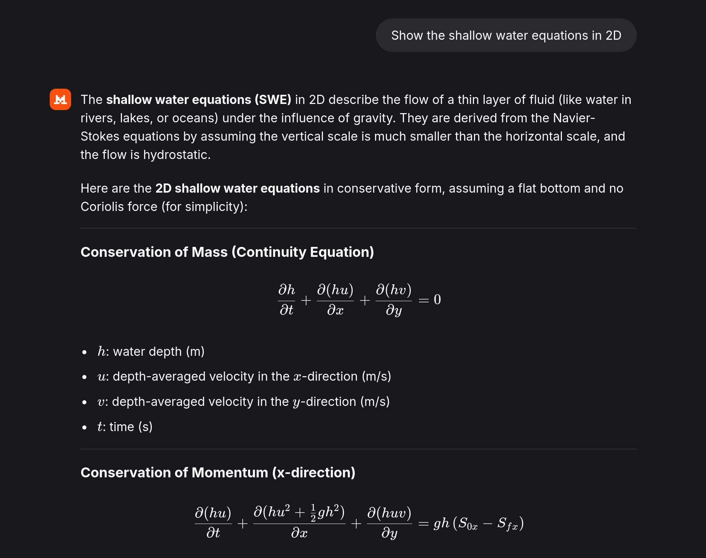
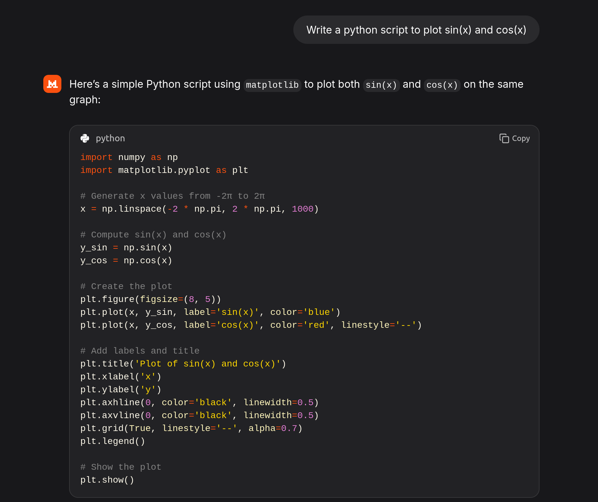
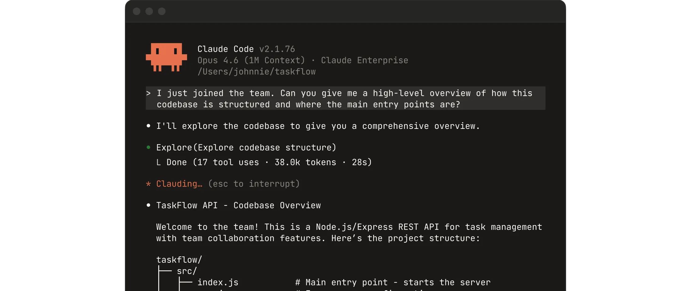
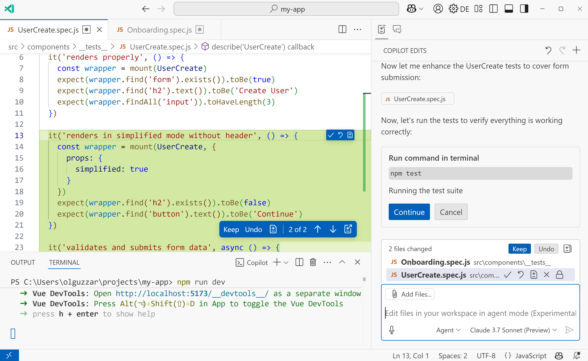
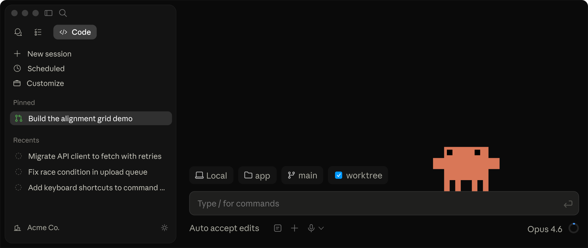
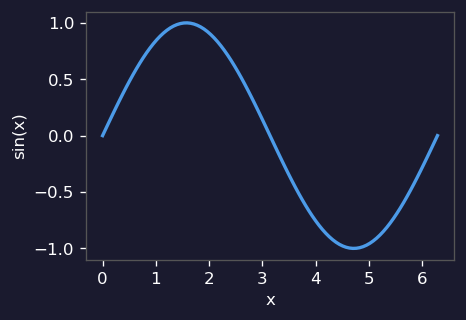
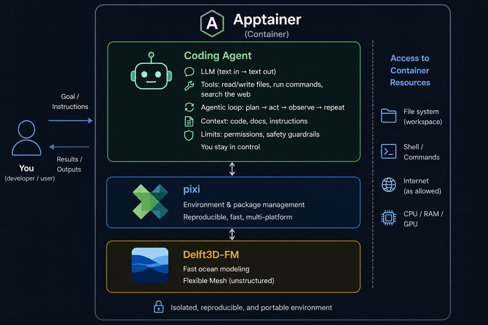

Coding agents for engineers
coding python and interacting with models
2026-05-15
You’ve probably done this

And this

But this is where it gets interesting
Coding agents
In your terminal

In VS Code

As a desktop app

What is a coding agent?
An LLM is simple: text in → text out
A coding agent adds:
- Agentic loop — plan → act → observe → repeat until done
- Tools — read/write files, run commands, search the web
- Context — your code, docs, and instructions fed in automatically
- Limits — permissions, safety guardrails — you stay in control
(1) The agentic loop in action
You: “plot sin(x) and save it”
Agent writes plot_sin.py:
Runs it:
$ python plot_sin.py
ModuleNotFoundError: No module named 'matplotlib'Fixes it:
$ pip install matplotlib
$ python plot_sin.py ✓
(2) Tools — the agent’s hands
| Read | any file — scripts, model input, netCDF output |
| Edit / Write | modify or create files — code, run scripts, configs |
| Bash | run any shell command — python, pip, git, model runs |
| Web | search for docs, fetch a specific page or file |
| Vision | inspect figures, screenshots, diagrams — check plausibility, not just presence |
| Subagents | spawn parallel agents for larger tasks (advanced) |
| MCP | plug in external tools — databases, APIs, custom tools (advanced) |
(3) Context — what the agent sees
You talk to a colleague who has already read your code.
- Your files — reads scripts and configs directly; no copy-pasting
- Command output — sees error messages, print statements, test results
- Instructions —
CLAUDE.md: your project rules, written once, always applied - Conversation — builds on earlier steps within a session
The more context it has, the more useful it is (at least until ~70% of the context window)
(4) Limits — you stay in control
- Permission prompts — the agent asks before editing or running anything
- You can say no — review each proposed action, approve or deny
- Privacy — your code is sent to the LLM provider; check their policy
- Mistakes happen — always work in a git repo so you can roll back
- Sandboxed containers — this repo gives you a safe space to experiment
Who offers coding agents?
| Chat | Coding agent | |
|---|---|---|
| Microsoft / GitHub | Copilot Chat | GitHub Copilot |
| OpenAI | ChatGPT | Codex CLI |
| Anthropic | Claude | Claude Code |
| Gemini | Gemini CLI | |
| Mistral | Le Chat | Mistral Vibe CLI |
Current models
| Fast & cheap | Balanced | Powerful | |
|---|---|---|---|
| Anthropic | Haiku | Sonnet | Opus |
| OpenAI | o4-mini | GPT-4o | GPT-5 |
| Gemini Flash | Gemini Pro | Gemini 3 Pro (2M ctx) | |
| Mistral | Mistral Small | Mistral Large | (open-weight available) |
| Microsoft | (OpenAI & Anthropic models) |
Choosing a model:
- Quick question, autocomplete → fast & cheap
- Everyday coding tasks → balanced
- Large codebase, complex refactor → powerful
CliCodingAgents
a ready-made environment: coding agent + pixi + Delft3D-FM

Why Apptainer?
- Already installed on many HPC clusters — no root access or admin required
- Container image in a single
.siffile — easy to share and archive - File access limited to a defined scope — for CliCodingAgents: current working directory only
- Pre-installed software — coding agent, tools, and Delft3D-FM ready to go
- Pre-installed pixi — add your own packages with
pixi init; pixi install python
Installing Apptainer on a Windows 11 laptop
Enable WSL2, install Ubuntu from the Microsoft Store, then install Apptainer via the official PPA:
Then run a container:
Full docs: https://apptainer.org/docs/admin/latest/installation.html
GPU support (--nv flag for NVIDIA): https://apptainer.org/docs/user/latest/gpu.html
Agent + Delft3D-FM in action
Delft3D-FM container — what’s inside
- Binaries —
dflowfm,dimr,delwaq,delpar,rr,rtc+ run scripts - Parallel runs — Intel MPI included;
run_dimr.sh -c <cores>for multi-core - Manuals & PDF tools — user manuals at
/opt/;popplerfor PDF reading by the agent - Example models — from the Delft3D-FM repository, ready to explore and modify
- Python & Julia via pixi — post-processing with xarray, matplotlib, netCDF4, …
CLAUDE.md— tells the agent key paths, run commands, and model conventions
Can I do this myself with VS Code?
Almost — set it up manually on any Linux machine or cluster:
- VS Code extensions — Remote-SSH to connect to a cluster; GitHub Copilot or Claude Code for the agent
CLAUDE.md/AGENTS.md— create a project instructions file so the agent knows your setup- Download manuals — Delft3D-FM user manual and technical reference from the Deltares website
- Install pixi —
curl -fsSL https://pixi.sh/install.sh | bash; add Python, Julia, plotting libs - Install poppler —
sudo apt install poppler-utilsso the agent can read PDF manuals - Install Delft3D-FM — if not already available; contact Deltares for the binaries
- Add example models — copy from the Delft3D-FM examples folder
But:
- has to be repeated by everyone on every cluster — in my experience still sub-optimal
CLAUDE.mdandpixi.tomlcan be shared via git — binaries still need installing per machine
Personal experience (n=1)
- CLI feels more productive than VS Code plugin for engineering workflows on a cluster
- Claude — best results in my experience
- Copilot — paid by employer, convenient; selecting Claude agent in plugin helps but still sub-optimal
- Mistral — more open and European; LLM weights open
- Engineers potentially benefit more than developers?
- Late 2025: shifted from interesting to genuinely productive
Personal experience (n=1) — tips
What works well
- Be explicit about what you want
- Interrupt if the agent deviates — don’t let it run too far
- Create a
plan.mdfor larger tasks - Edit
CLAUDE.mdto make context more specific to your project - Create scripts for recurring tasks — or ask the agent to write them
- Add unit testing to
CLAUDE.md— the agent makes logic errors; tests catch them early - Use the agent to discuss options and learn
What doesn’t work
- Assigning big tasks with results you don’t understand
- Using the agent to avoid thinking
Questions?
- How much productivity can be gained for numerical modelling work?
- What mode of working fits the task and your preferences best?
- Will every engineer use coding agents a year from now?
Please experiment to find out where you stand.